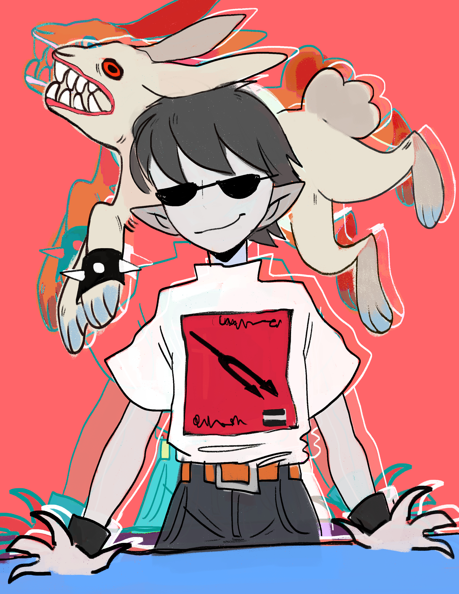

ESPECIE: Diurna
DIETA: Carnívoro
ESTADO: Activo
SUBJECT: PALMER
ORIGEN: ASCEND
[ REGISTRO HISTÓRICO ]
Palmer fue creado por la organización ASCEND, donde permaneció bajo observación durante nueve años. Es un sujeto relajado pero siempre alerta; su naturaleza desconfiada es una respuesta directa a su entorno.
[ CAPACIDADES ANALÍTICAS ]
- Oído Hiper-sensible: Capacidad de escuchar latidos cardíacos para detectar engaños.
- Aptitud Musical: Guitarrista y aspirante a compositor de géneros experimentales.
[ PLAYLIST ]
CANCIONES FAVORITAS
- 01. Massive Attack - Karmacoma
- 02. Massive Attack - Safe form harm
- 03. Massive Attack - Light my fire
[ ARCHIVOS_VISUALES / SKETCHES ]
 IMG_001.raw
IMG_001.raw
 IMG_002.raw
IMG_002.raw
 IMG_003.raw
IMG_003.raw
 IMG_003.raw
IMG_003.raw

IMG_003.raw